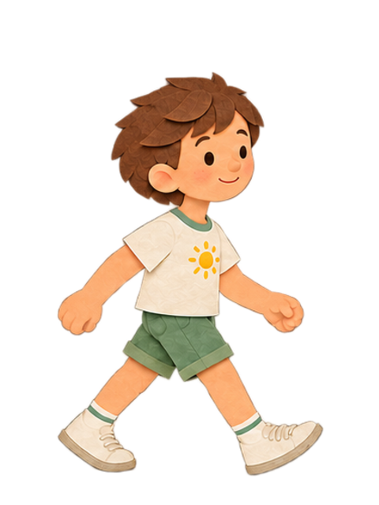
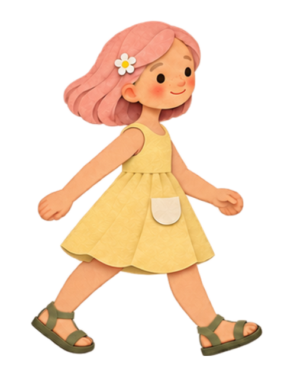

Мальчик — весь цикл

Девочка — весь цикл

Восемь фаз ходьбы каждого героя. Одинаковый размер PNG и общая линия опоры. Для просмотра герои шагают на месте; в видео их положение перемещается отдельно.


Первый кадр мальчика · Первый кадр девочки · Как использовать